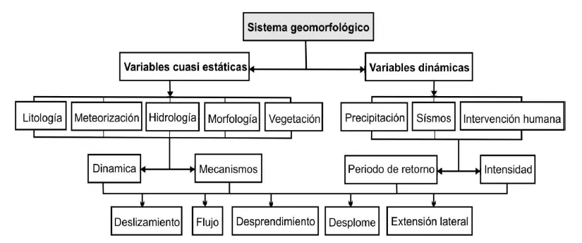
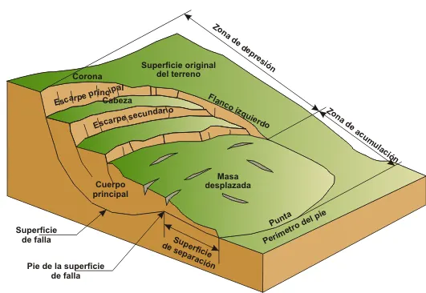
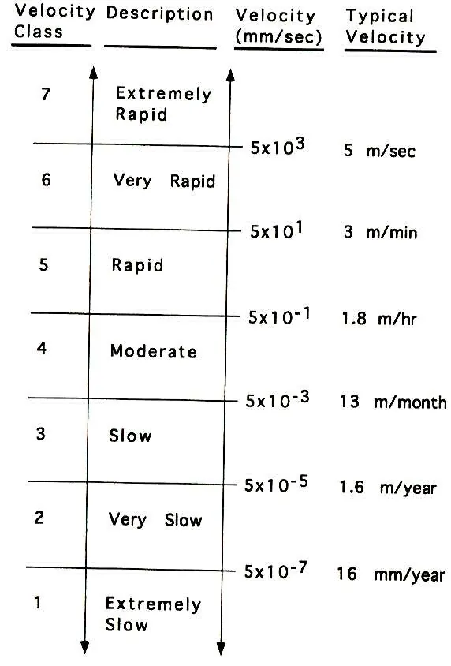

Movimientos en masa#
Importante
Objetivos de aprendizaje
Usar la terminología técnica de los movimientos en masa y reconocer sus partes.
Clasificar los movimientos en masa según Cruden y Varnes (1996), incluyendo su actividad, velocidad y contenido de agua.
Explicar los mecanismos de los movimientos en masa superficiales detonados por lluvia.
Estimar el volumen de un deslizamiento y conocer los principios de su cartografía.
Terminología y definiciones#
La literatura usa muchos términos para los mismos procesos, y esto genera confusión. Los términos técnicos más aceptados son movimiento en masa, deslizamiento (en sentido amplio), movimiento de ladera y remoción en masa. En el lenguaje común se usan palabras como derrumbe o, en Colombia, «volcán» para referirse a cualquier evento. Hay también términos mal empleados: avalancha (que debería reservarse para los flujos muy rápidos de nieve o detritos), falla geológica (que es una estructura tectónica, no un movimiento de ladera) y deslizamiento para cualquier tipo de evento [Proyecto Multinacional Andino: Geociencias para las Comunidades Andinas, 2007].
Cruden [1991], en la definición adoptada por el Grupo de Trabajo sobre el Inventario Mundial de Deslizamientos de la UNESCO (WP/WLI), usa el término landslide para el movimiento de una masa de roca, detritos o tierra ladera abajo. Varnes [1978] prefería slope movement y lo definía como el movimiento hacia abajo y hacia afuera de los materiales que conforman una ladera bajo la influencia de la gravedad. En la escuela europea, Brunsden (1984) usa mass movement para diferenciarlo del transporte en masa, en el que hay un medio de transporte como el agua, el aire o el hielo. En este libro, siguiendo al Proyecto Multinacional Andino [Proyecto Multinacional Andino: Geociencias para las Comunidades Andinas, 2007], se usa movimiento en masa como término general y deslizamiento para el tipo específico de movimiento sobre una superficie de ruptura.

Figura 54 Movimiento en masa: desplazamiento de roca, detritos o tierra ladera abajo por acción de la gravedad.#
Una visión geomorfológica#
Los movimientos en masa son procesos normales en la evolución del paisaje. Scheidegger (1998) los define como modificaciones del terreno dentro del ciclo geomorfológico continuo, que corresponden a la respuesta normal del sistema a complejos factores exógenos (meteóricos) y endógenos (tectónicos). Desde esta perspectiva, las laderas son sistemas abiertos no lineales que evolucionan hacia estados cercanos al umbral de inestabilidad, y la frecuencia de los movimientos sigue una distribución en la que los eventos grandes son menos frecuentes que los pequeños, según una ley de potencia.
Los movimientos en masa resultan de la combinación de las condiciones naturales del terreno (geomorfología, hidrología, geología) y de sus modificaciones por procesos geodinámicos, cambios en la vegetación, usos del suelo y actividades humanas. Estas modificaciones reducen gradualmente las condiciones de equilibrio y pueden activar movimientos lentos. Luego, factores detonantes como la lluvia, los sismos o los cortes antrópicos transforman esos movimientos lentos en movimientos rápidos [Soeters and van Westen, 1996]. La distinción entre factores condicionantes, que hacen susceptible a una ladera, y factores detonantes, que desencadenan el movimiento, es la base de la evaluación de la susceptibilidad y la amenaza.


Figura 55 Los movimientos en masa dentro del proceso morfodinámico de las laderas. Fuente: modificado de Brunsden (2002).#
Partes de un movimiento en masa#
La nomenclatura de las partes permite describir un movimiento de manera estandarizada. En la parte superior está la corona, el terreno no desplazado adyacente a la parte más alta del escarpe; el escarpe principal, superficie inclinada producida por el desplazamiento del material; y la cabeza, parte superior del material desplazado. El cuerpo es la parte principal del material desplazado, y la superficie de ruptura es la superficie sobre la cual se produjo el movimiento. En la parte inferior están el pie, que es la porción del material desplazado que descansa ladera abajo de la superficie de ruptura, la punta o uña y los flancos a los lados. Las grietas transversales, longitudinales y radiales y los escarpes secundarios permiten reconstruir el mecanismo.


Figura 56 Partes de un movimiento en masa. Fuente: GEMMA (2007) y Cruden y Varnes (1996).#
Volumen#
Un deslizamiento rotacional típico tiene forma de cuchara, aproximadamente la mitad de un elipsoide. Su volumen se estima con
donde \(D_r\) es la profundidad de la superficie de ruptura, \(W_r\) su ancho y \(L_r\) su longitud. El material desplazado aumenta de volumen alrededor de un 30 % por esponjamiento. La relación \(D/L\) es un indicador del mecanismo: los deslizamientos rotacionales tienen relaciones entre 0,15 y 0,33, y los traslacionales, menores de 0,1.
Ejemplo resuelto: volumen de un deslizamiento
Un deslizamiento rotacional tiene una superficie de ruptura de 120 m de longitud, 60 m de ancho y 8 m de profundidad. Estime el volumen de material desplazado.
\(V=(\pi/6)(8)(60)(120)=30\,160\) m³. Con un esponjamiento del 30 %, el material removido ocupará unos 39 200 m³. La relación \(D/L=8/120=0{,}07\) sugiere, sin embargo, un mecanismo más traslacional que rotacional, lo que conviene verificar en campo.
Clasificación de Cruden y Varnes (1996)#
Existen numerosas clasificaciones de los movimientos en masa, que combinan el clima, el material, la geología, el tipo de movimiento, la velocidad, el agente de transporte, el detonante o los atributos morfológicos. La más usada es la de Cruden and Varnes [1996], actualización de la de Varnes [1978] publicada en el Informe Especial 247 del Transportation Research Board y adoptada por el WP/WLI. Nombra los movimientos con dos términos: el tipo de material y el tipo de movimiento.
Tipo de material#
La roca es una masa firme e intacta antes del movimiento. El suelo se divide en detritos, cuando entre el 20 y el 80 % de las partículas son mayores de 2 mm, y tierra, cuando el 80 % o más son menores de 2 mm.
Tipo de movimiento#
Caídas. Comienzan con el desprendimiento de suelo o roca de una pendiente fuerte a lo largo de una superficie con poco o ningún desplazamiento cortante. El material desciende principalmente por el aire, en caída libre, rebote o rodamiento. Son muy rápidas a extremadamente rápidas y ocurren en rocas y suelos cohesivos, en acantilados, márgenes de ríos socavadas y cortes de carreteras.
Volcamientos. Consisten en la rotación hacia adelante de una masa de suelo o roca alrededor de un punto o eje situado debajo de su centro de gravedad. Los produce la gravedad, a veces ayudada por el agua o el hielo en las grietas. Su velocidad varía de extremadamente lenta a extremadamente rápida, y son típicos de macizos con discontinuidades que buzan fuertemente hacia el interior del talud.
Deslizamientos. La masa se desplaza sobre una o varias superficies de ruptura. En los rotacionales, propios de materiales relativamente homogéneos, la superficie es cóncava y la masa tiende a rotar y a restablecer su equilibrio. En los traslacionales la superficie es plana u ondulada, generalmente más superficial, y sigue discontinuidades como fallas, planos de estratificación o el contacto entre el suelo y la roca.
Propagaciones laterales. Consisten en la extensión lateral de una masa fracturada por corte y tensión, con hundimiento general en un material subyacente menos competente. Suelen deberse a la licuación o al flujo del material inferior y avanzan por falla progresiva.
Flujos. Son movimientos espacialmente continuos en los que las superficies de corte son efímeras y no se preservan, y la deformación se distribuye en toda la masa. Hay una gradación desde los deslizamientos hasta los flujos según el contenido de agua, la movilidad y la evolución del movimiento. Incluyen los flujos superficiales, los flujos de detritos en laderas abiertas y canalizados, las avalanchas de detritos y los lahares.
Reptación. Es un movimiento muy lento de la capa superficial del suelo. Algunos autores la consideran un proceso partícula a partícula, más cercano a la erosión que a un movimiento en masa propiamente dicho.

Figura 57 Flujo de detritos.#
Actividad, velocidad y contenido de agua#
Cruden y Varnes completan la descripción con varios atributos. El estado de actividad puede ser activo (en movimiento), suspendido (se movió en el último ciclo anual), reactivado, inactivo, dormido (las causas persisten), estabilizado (por obras artificiales), relicto (se formó en condiciones geomorfológicas y climáticas diferentes a las actuales) o abandonado (las causas cambiaron). La distribución describe hacia dónde avanza la superficie de ruptura: progresivo (en la dirección del movimiento), retrogresivo (en dirección opuesta, hacia la corona), ampliándose lateralmente, alargándose, disminuyendo, confinado o moviéndose. El estilo indica si el movimiento es complejo (al menos dos tipos de movimiento en secuencia), compuesto (diferentes tipos en diferentes partes de la masa), sucesivo, sencillo o múltiple.
La velocidad se clasifica en siete clases, desde extremadamente lenta (menos de 16 mm por año, imperceptible sin instrumentos) hasta extremadamente rápida (más de 5 m/s, con consecuencias catastróficas y pérdida de vidas). La velocidad es el atributo que más influye en el riesgo, porque determina si hay tiempo para evacuar. El contenido de agua se describe como seco, húmedo (contiene agua pero no libre), mojado (contiene suficiente agua para comportarse en parte como líquido) o muy mojado (fluye como un líquido aun en pendientes bajas).


Figura 58 Escala de velocidades de los movimientos en masa y nivel de daños asociado. Fuente: Cruden y Varnes (1996).#
Movimientos en masa detonados por lluvia#
En los Andes tropicales la lluvia es el detonante más frecuente. Los movimientos más abundantes son los superficiales, llamados soil slips en la literatura: deslizamientos que se transforman en flujos de lodo o de detritos, de pequeño espesor (0,3 a 2 m) y área de escarpe reducida. Se producen durante lluvias intensas por el aumento rápido de la presión de poros o por la pérdida de la cohesión aparente asociada a la succión. Una vez desplazado, el material puede licuarse y convertirse en un flujo que desciende por la ladera, erosiona y arrastra sedimentos del canal e incrementa su volumen inicial [Wang and Sassa, 2003].
El análisis de estos movimientos combina un componente hidrológico, que describe cómo la lluvia se infiltra, cómo avanza el frente de humedecimiento y cómo se forma un nivel freático colgado sobre el contacto con un material menos permeable, y un componente geotécnico, que evalúa la estabilidad con el modelo de talud infinito (capítulo Estabilidad de laderas y taludes). Esta combinación es la base de los modelos físicos de susceptibilidad a escala de cuenca, como SHALSTAB [Montgomery and Dietrich, 1994] y TRIGRS.

Figura 59 Componentes hidrológico y geotécnico de los movimientos en masa detonados por lluvia. Fuente: Dietrich y Montgomery (1998).#
Desde un enfoque empírico, la relación entre la lluvia y los movimientos se expresa con umbrales de intensidad-duración o de lluvia acumulada, por encima de los cuales la probabilidad de movimientos aumenta. En el Valle de Aburrá, los estudios muestran que la lluvia antecedente de varias semanas es tan importante como el evento detonante, porque controla el estado de humedad del perfil [Aristizábal et al., 2010].
Movimientos complejos y transición a flujos#
Muchos eventos combinan un deslizamiento inicial con un flujo posterior. En el continuo que va del transporte fluvial a los movimientos en masa se reconocen las crecientes, los flujos hiperconcentrados, los flujos de lodo, los flujos de detritos y las avalanchas de detritos, que se diferencian por la concentración de sedimentos y por su reología. Pierson and Costa [1987] clasificaron estos flujos en una matriz de velocidad media y concentración de sedimentos, en la que el comportamiento pasa de newtoniano a plástico (Bingham) al aumentar la concentración. Estos procesos son la base de las avenidas torrenciales, que en Colombia han causado algunos de los desastres más graves.
Cartografía de movimientos en masa#
La cartografía es la base de cualquier evaluación de la amenaza. Comprende el inventario, que registra la ubicación, el tipo, el estado de actividad y la fecha de los movimientos, a partir de fotografías aéreas, imágenes de satélite, modelos digitales de elevación y trabajo de campo; los mapas de susceptibilidad, que zonifican la propensión del terreno a generar movimientos a partir de los factores condicionantes; y los mapas de amenaza y riesgo, que incorporan la probabilidad temporal de los detonantes y los elementos expuestos. La geomorfología permite reconocer los movimientos antiguos, que son indicadores de las zonas donde pueden ocurrir nuevos eventos y donde la resistencia puede estar reducida a su valor residual.

Figura 60 Ejemplo de cartografía de movimientos en masa.#
Lecturas recomendadas#
Ejercicios#
Clasifique según Cruden y Varnes un evento en el que un bloque de arenisca se desprende de un escarpe, cae, se fragmenta y continúa como un flujo de detritos por un canal.
Visite un movimiento en masa cercano, identifique sus partes y describa su estado, distribución y estilo de actividad.
¿Por qué un movimiento relicto puede ser importante en la planificación de una vía, aunque no muestre actividad?